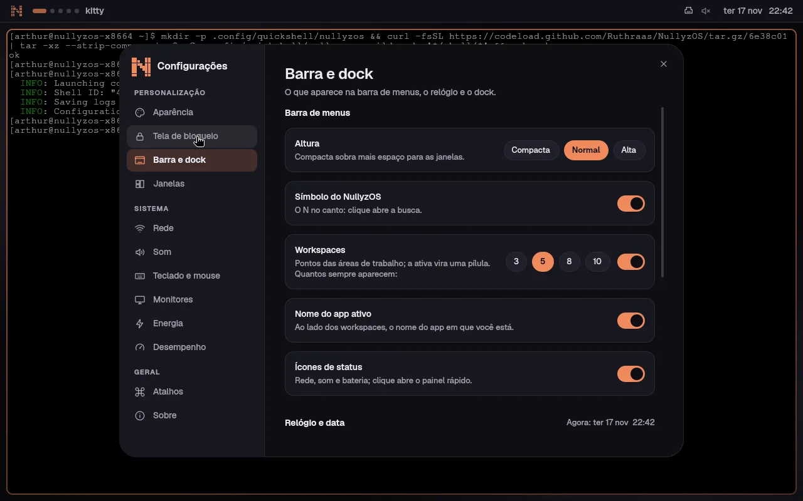
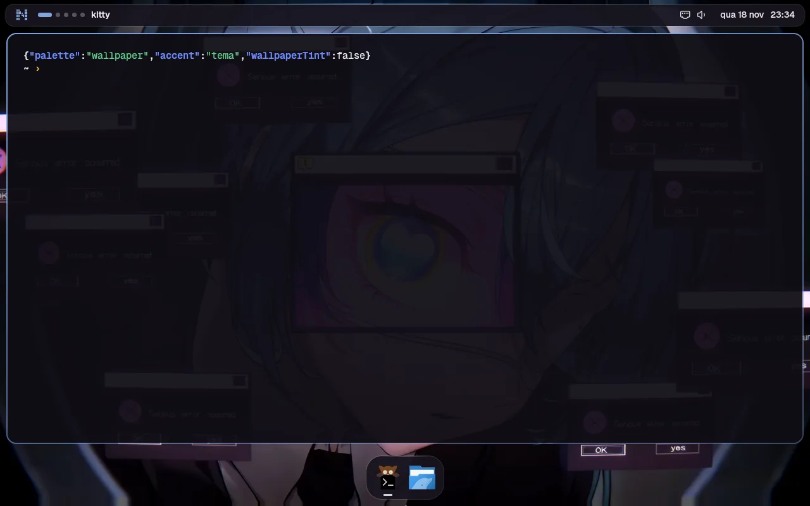
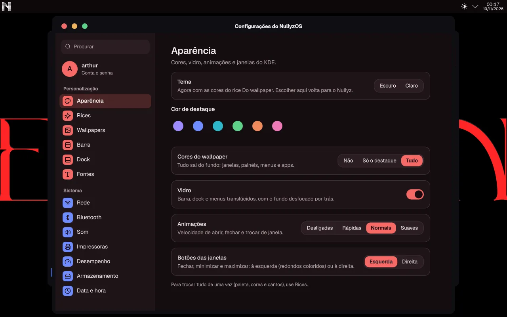
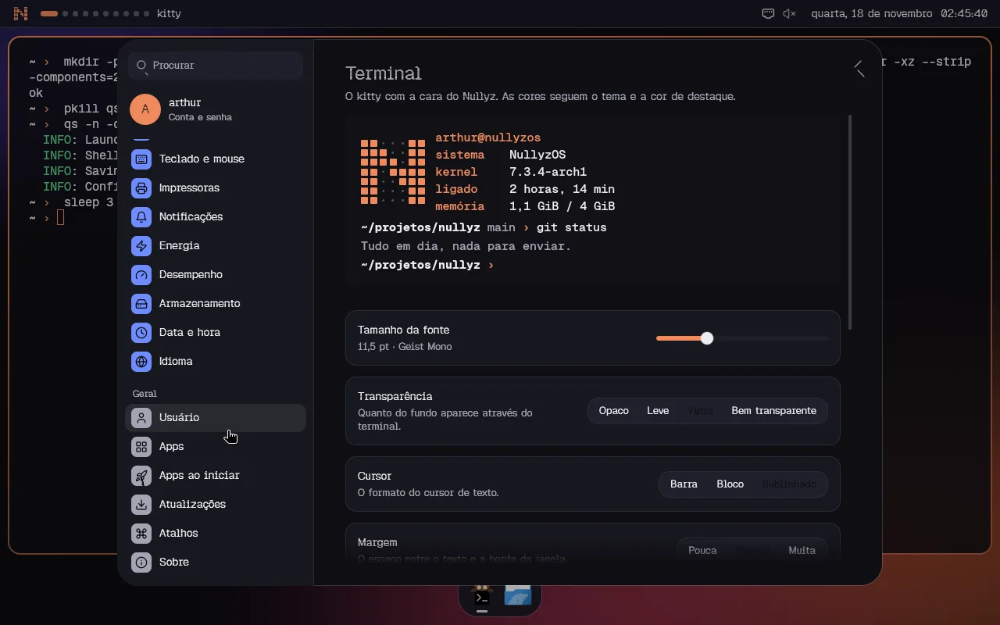
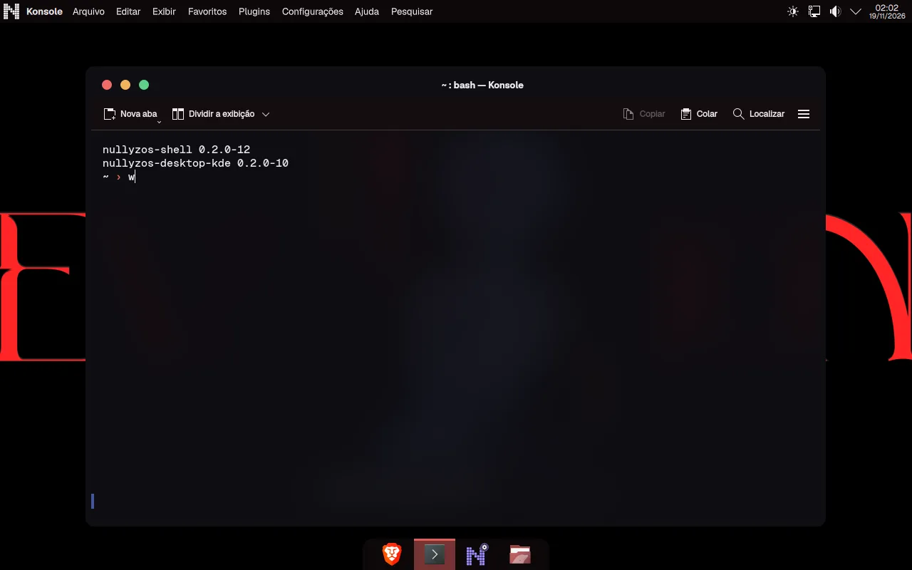
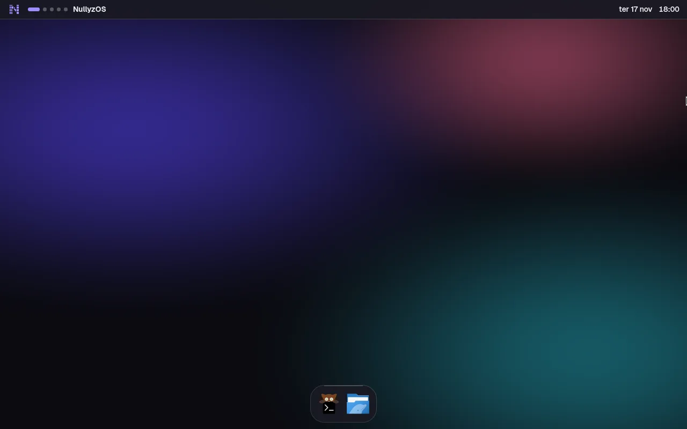

nullyzos
Arch Linux pronto para usar, com o visual que você escolhe. Grátis e em português.
Versão 0.2 beta · Hyprland ou KDE Plasma · 64 bits
Nove visuais, um clique
Um rice muda o sistema inteiro: cores, barra, cantos e terminal. Escolha um aqui e veja a tela e esta página mudarem com ele.
O padrão: escuro, vidro, violeta e cantos arredondados.
Antes de trocar, o sistema guarda um snapshot. Não gostou? Desfazer volta tudo como estava. Os rices da comunidade entram como receitas revisadas, com o nome e a licença de quem fez.
As cores saem do seu fundo
Ligue “Cores do wallpaper: Tudo” e o NullyzOS monta a paleta inteira a partir da imagem: barra, dock, janelas, terminal e apps.
Trocou o fundo, as cores acompanham. Funciona no Hyprland e no KDE. Também dá para pegar só a cor de destaque, ou deixar o fundo fora disso.


Instalar é guiado, do início ao fim
Para começar, baixe a ISO e confira a soma SHA256 (o passo a passo está logo abaixo, em Baixar). Grave num pendrive de 8 GB com o Rufus, o Ventoy ou o Fedora Media Writer.
Ao ligar pelo pendrive, o instalador abre sozinho. Você escolhe o idioma, o teclado, o desktop (Hyprland ou KDE) e o visual, já vendo como cada um fica.
No disco, “Apagar disco” faz tudo. Marque “Criptografar” e seus arquivos ficam protegidos se o computador for perdido ou roubado.
No primeiro login, o rice escolhido já está aplicado, com o firewall ligado, os snapshots configurados e o navegador instalado.
Janelas lado a lado ou soltas, tudo pelo teclado se você quiser. O mais leve, com a maior parte dos rices.

Hyprland
Completo e familiar: menu global, apps do KDE, as Configurações do NullyzOS no lugar das do KDE.

ou KDE Plasma
Seguro sem você configurar nada
- 0
- scripts baixados da internet e nada do AUR. Tudo vem dos repositórios oficiais do Arch ou do nosso, assinado.
- 1
- clique para voltar: snapshot antes de cada atualização e de cada troca de rice, também no menu do boot.
- ON
- firewall ligado desde o primeiro boot, bloqueando conexões de fora.
- 8+
- caracteres na senha, conta root bloqueada e kernel e rede endurecidos.
- Wi-Fi
- sem rastrear o aparelho: endereço aleatório ao procurar redes e um diferente em cada rede.

Leve de verdade
780 MiB
de memória em uso com o Hyprland, o desktop Nullyz e um terminal aberto, medido logo depois do login numa máquina virtual com 4 GB.
Feito sobre
- Arch Linux
- Hyprland
- KDE Plasma
- Quickshell
- Calamares
- Snapper
Perguntas
É de graça? Sim, e o código é aberto (GPL-3.0), no GitHub.
Posso usar no dia a dia? É uma versão beta. Funciona, mas teste antes num PC sem nada importante ou tenha backup.
Hyprland ou KDE? O Hyprland é mais leve e tem mais rices; o KDE é mais familiar para quem vem do Windows. Dá para escolher na instalação.
Preciso saber Linux? Não. Configurações, atualizações, Wi-Fi e Bluetooth ficam em telas próprias, em português.
O que é um rice? Um visual completo do sistema: cores, barra, cantos, terminal. Troca em um clique e volta se não gostar.
Funciona em máquina virtual? Sim. Com o Hyprland, ligue a aceleração 3D da VM; sem 3D, escolha o KDE.
E o Secure Boot? Por enquanto, desligue na BIOS. A ISO ainda não é assinada para ele.
Como sei que a ISO é original? Confira a soma SHA256 e a assinatura GPG da chave Nullyz Packages. O passo a passo está em Baixar.
Onde instalo programas? Na loja de apps (Flathub) ou pelo pacman, dos repositórios oficiais do Arch.
Achei um problema. Abra uma issue no GitHub com o modelo do PC e o que aconteceu.
Baixe e experimente
A ISO tem cerca de 1,8 GB. Confira a soma antes de gravar no pendrive: assim você sabe que ela chegou inteira e é a original.
NullyzOS 0.2 beta
sha256sum -c SHA256SUMSChave GPG Nullyz PackagesC43C 292B 0901 FB84 D4A1 A174 3682 8706 C86F B94A